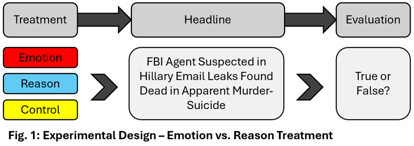
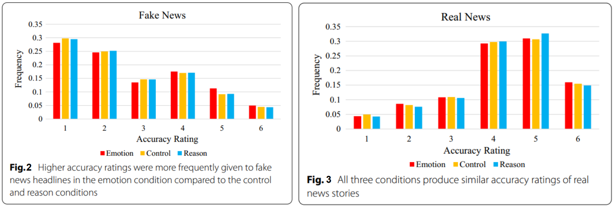

Emotion vs. Truth - Why We Fall for Fake News
Have you ever shared a shocking news story before checking whether it was true? If so, you are not alone. In our fast-paced digital world, it is becoming easier than ever to write and publish news articles and opinions, as well as to share them. A single post can nowadays reach millions of people around the world in a matter of hours. But how can we distinguish between a factual article and fake news? And what role do our emotions play in this process?
In recent years much research has focused on how analytical thinking, or its absence, affects susceptibility to false information. A study by Martel et al. (2020) builds on this research and adds an important new dimension to it: What happens when we let our emotions, rather than reason, guide our judgment of truth? Their findings provide valuable insights, showing that emotion is not just a background influence. It actively shapes whether we believe a headline is true, especially when that headline is false.The researchers explored this question through a two-study design. In the first design, a correlational design, they asked over 400 participants to rate their current emotional state. Afterwards, participants were shown a mix of real and fake political headlines and asked to evaluate their perceived accuracy. In the second design, a much larger experimental study, they used nearly 4000 participants. The participants were split into 3 groups before they again rated political headlines for their truthfulness. One group was instructed to rely on their emotions, another to rely on reason, and the third received no instructions and served as a control group. The experimental design is depicted in Figure 1. This setup did not only allow the researchers to explore whether emotion correlates with suspected truthfulness, but also whether encouraging a certain mindset can influence the way people judge accuracy.


When participants were instructed to base their judgment on either emotion or reason, the results support the earlier findings. Participants who were asked to base their judgment on emotions were more likely to believe fake headlines more than the participants who were told to rely on reason. This shows that emotions are not a neutral factor in our decision process, but rather that they actively influence our beliefs.
These findings fit well within the broader context of psychology and behavioral economics. Daniel Kahneman describes in his book “Thinking, fast and slow” (2011) a cognitive concept about two different ways the brain can form its judgment:
- System 1: Fast, automatic, emotional and unconscious
- System 2: Slow, effortful, logical and conscious
Martel et al.’s results align closely with this framework. When people rely on System 1 thinking, they form beliefs quickly and emotionally, often without conscious thought, leading people to make their judgment before reflecting on the information. This ties back to our opening question: Have you ever shared shocking news before checking if it was true? The consequence of this system is that it can lead to cognitive biases as well as misjudgments. In contrast, when people engage in System 2 thinking, they slow down and evaluate information more critically. As Martel et al. (2020) found, participants who relied on reason, rather than emotion, made more accurate judgment distinguishing between true and false headlines.
The study highlights the importance of relying on reason rather than emotion when judging whether information is accurate. Especially in today’s media environment, where platforms are designed for engagement, rather than accuracy. This is problematic, since false content spreads faster and gets more attention than the truth. The real-world implications of this are serious. Misinformation not only shapes political beliefs, but also consumer behavior, health decisions and financial markets. Kogan et al. (2023) found that false financial news led to an increase in retail trading and prices, followed by a sharp decline when the truth emerged. Overvalued firms then saw a sharp drop in their stock prices. This shows the real financial risk of falling for misinformation.
While this study by Martel et al. deepens our understanding of how emotions influence our perception of truth, it also raises several new questions. For instance, future research could examine how emotional nudges affect truth judgment. This means rather than actively influencing the basis of the decision-making, how would passive priming of certain emotions affect truth judgement? Additionally, this study focuses on the differences between emotion and reason. But isn’t there a middle ground? What happens when people engage in both emotion and reason simultaneously? Finally, since all the headlines used in the study were political, it remains to be seen whether these effects hold in other scenarios as well. These could include health misinformation, lifestyle and entertainment news, or financial reporting.
In a world of endless scrolling and quick sharing of information emotional reactions are fast, but not always wise. Martel et al. (2020) show that the way we think affects what we believe. While emotions play a powerful role in decision-making, they may mislead us when we try to judge the truthfulness of information. Pausing to think and engaging in our rational mind might just be the best way to not fall for misinformation.Bibliography:
Martel, C., Pennycook, G., & Rand, D. G. (2020). Reliance on emotion promotes belief in fake news. Cognitive Research: Principles and Implications, 5(47). https://doi.org/10.1186/s41235-020-00252-3
Kogan, S., Moskowitz, T. J., & Niessner, M. (2023). Social media and financial news manipulation. Review of Finance, 27(4), 1229–1268. https://doi.org/10.1093/rof/rfac058
Kahneman, D. (2011). Thinking, fast and slow. Farrar, Straus and Giroux.